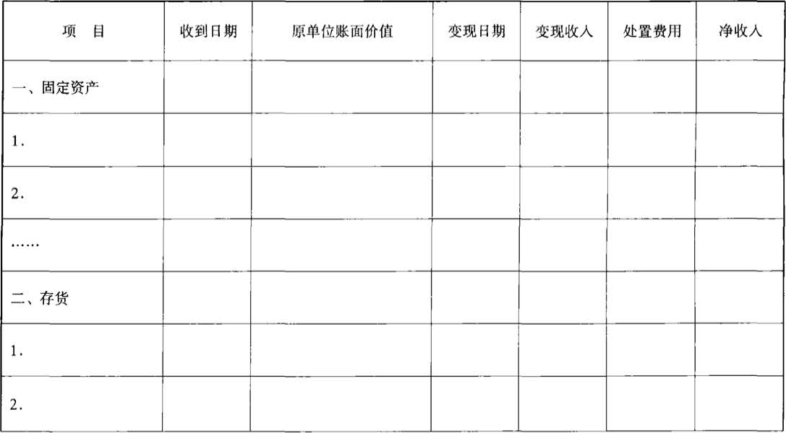
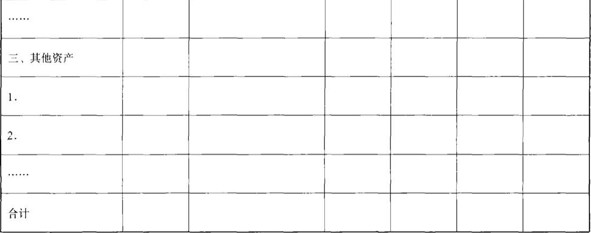

财政部
关于印发《社会保险基金会计核算若干问题补充规定》的通知
财会〔2003〕19号
【依据《关于印发〈社会保险基金会计制度〉的通知》（财会〔2017〕28号）于2018.01.01废止；依据《关于公布废止和失效的财政规章和规范性文件目录（第十三批）的决定》（财政部令第103号）于2020.01.23废止】
各省、自治区、直辖市、计划单列市财政厅（局），新疆生产建设兵团财务局：
《社会保险基金会计制度》自1999年7月1日实施以来，对规范和加强社会保险基金的会计核算起到了积极作用。随着社会保障制度改革的不断深化，各地在执行会计制度过程中又出现了一些新的问题，需要进一步明确。为此，我们在《社会保险基金会计制度》的基础上，制定了《社会保险基金会计核算若干问题补充规定》，现印发给你们，请转发所属社会保险经办机构遵照执行。
附件：社会保险基金会计核算若干问题补充规定
财政部
2003年6月19日
附件：
社会保险基金会计核算若干问题补充规定
为了适应社会保障事业发展的需要，进一步规范社会保险基金的会计核算，现就社会保险基金会计核算若干问题，补充规定如下：
一、增设“105 国库存款”科目
社会保险费实行税务机关征收，并通过国库缴存财政专户的地区，社会保险经办机构应增设“105 国库存款”科目，核算社会保险费存入国库的款项。通过国库缴存财政专户的社会保险费，应于缴存国库时确认收入，并由社会保险经办机构根据社会保险费征收专用票据，分别不同的会计核算主体进行账务处理，借记“国库存款”科目，贷记“基本养老保险费收入”、“失业保险费收入”、“基本医疗保险统筹基金收入”、“医疗保险个人账户基金收入”、“待转保险费收入”等科目。按规定将国库存款转入账政专户，社会保险经办机构根据财政部门收款后开具的财政专户缴拨凭证和加盖专用印章的国库出具的拨款单复印件记账，借记“财政专户存款”科目，贷记“国库存款”科目。
二、多收社会保险费的会计处理
收到的社会保险费应作为当期社会保险费收入处理。对于已入账的社会保险费经审核确属多收的部分，可采取以下两种方式处理：
（一）从支出户退回多收的社会保险费，作为冲减有关收入处理。退回时，借记“基本养老保险费收入”、“失业保险费收入”、“基本医疗保险统筹基金收入”、“待转保险费收入”等科目，贷记“支出户存款”科目。
（二）多收的部分用于抵充以后缴纳的社会保险费，不作账务处理。
三、预收社会保险费的会计处理
因特殊情况预收的基本养老、失业、基本医疗、工伤、生育等社会保险费，如，企业破产时用货币资金预缴保险费、因缴费单位欠费法院强制执行预缴的保险费、季节性生产企业预缴的保险费等，应作为当期社会保险费收入处理。实际收到时，借记“国库存款”、“收入户存款”或“财政专户存款”科目，贷记“基本养老保险费收入”、“失业保险费收入”、“基本医疗保险统筹基金收入———预收保险费”、“医疗保险个人账户基金收入———预收保险费”等科目，同时，设置“预收社会保险费备查簿”，详细记录预收保险费的单位或个人名称、应记入统筹账户和个人账户的金额、预收期限等情况。
因特殊情况缓收的社会保险费，设置“缓收社会保险费备查簿”，详细记录缓收保险费的单位或个人名称、缓收金额、缓收期限等情况。
四、以实物资产抵充社会保险费的会计处理
社会保险费应以货币资金缴纳，不得以实物抵充缴费。因特殊原因以实物抵充社会保险费的，如，企业破产时以实物资产清偿社会保险费、因单位欠费法院强制执行收缴的实物资产清偿社会保险费等，应由社会保险经办机构设置“实物资产备查簿”，详细记录实物资产的品名、数量、规格、收到日期、原单位账面价值、变现日期、变现收入、净收入等情况。实物资产采用拍卖等形式变现，按变现后净收入（变现收入扣除变现过程中发生的手续费等处置费用）计入当期社会保险费收入。账务处理为：借记“收入户存款”或“财政专户存款”科目，贷记“基本养老保险费收入”、“失业保险费收入”、“基本医疗保险统筹基金收入”、“医疗保险个人账户基金收入”、“待转保险费收入”等科目。
五、有关数据核对
为了确保社会保险经办机构报表数、税务机关征缴数和财政专户入账数核对相符，社会保险经办机构应负责基本养老、失业、基本医疗、工伤、生育等各项社会保险基金收入、支出、结余等全过程的核算。财政部门、税务机关应及时向社会保险经办机构提供有关票据，开户银行（包括财政专户、收入户、支出户等开户银行）应及时提供银行对账单和有关票据，社会保险经办机构应按月与财政部门、税务机关核对数据。
六、会计报表
（一）“基本医疗保险基金收支表”（会医疗02表）增设“三、待转保险费收入”项目（15行）、“待转利息收入”项目（16行），根据“待转保险费收入”、“待转利息收入”科目期末（指1至11月份）发生额分析填列。编制年度会计报表时，该项目空置不填。
（二）社会保险经办机构在按照《社会保险基金会计制度》的规定编报各项社会保险费资产负债表和收支表的基础上，增设“实物资产明细表”，该表反映季末尚未变现的实物资产的有关情况，根据“实物资产备查簿”据实、按季编报，于季度终了后8日内报出。
财政补助收入支出表
| 编制单位： | ＿＿＿＿年＿＿月 | 01表附表1
单位：元 |
|


|